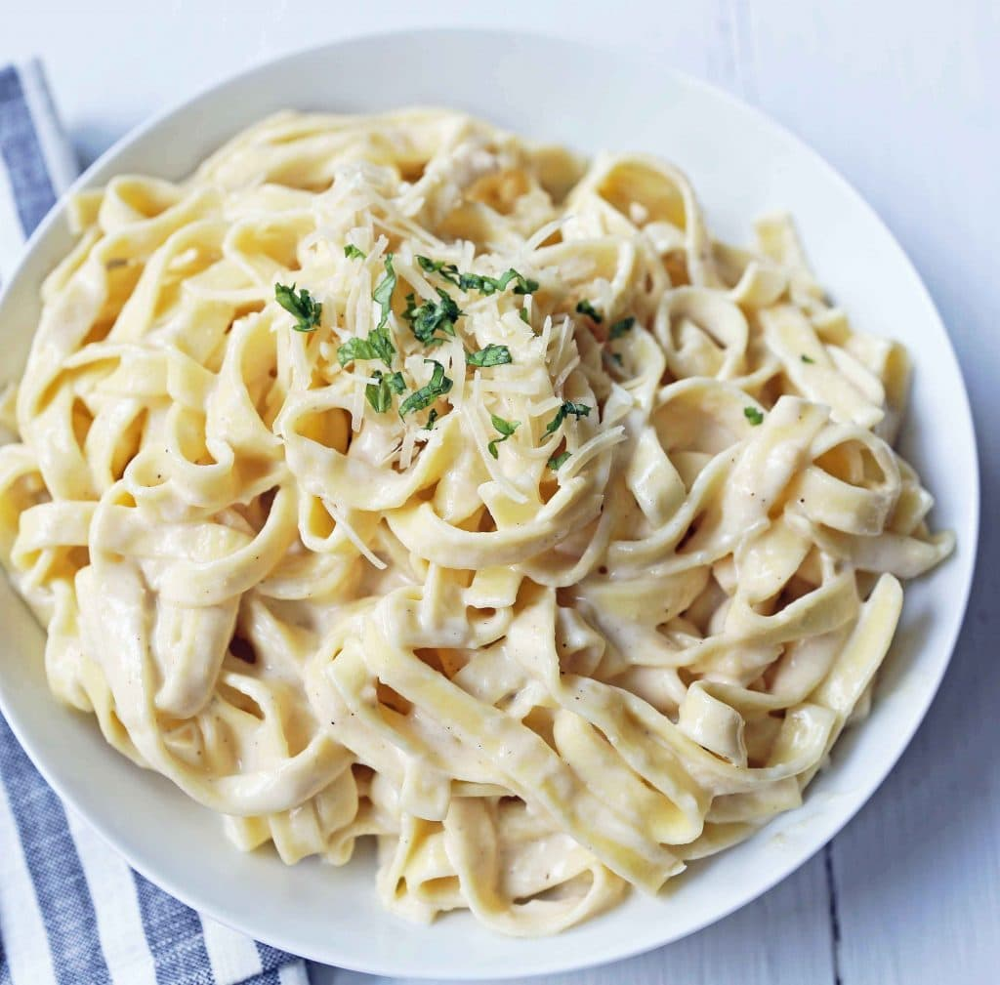

Alfredo Pasta Recipe

About the Alfredo Pasta
This dish is one of my favorite variations of pasta to make, and is a major staple in my diet. There is a million ways to make
pasta, but this is one of the best! For an added experience, follow this recipe and eat it alongside some toasted bread.
Ingredients
- box of dried pasta (I recommend penne)
- jar of premade alfredo sauce
- water
- seasoning (can be as simple as salt and pepper)
Steps
- First put about 4qt of water on high heat until it starts boiling.
- In a seperate pan, heat the alfredo sauce on low heat and stir every now and then.
- Once water is boiling, place penne pasta into pot for about 12-14 minutes (may be shorter or longer depending on type) and stir
occasionally.
- Once pasta is soft, drain water and place back into pan.
- Pour warm alfredo sauce into the pasta and stir until mixed evenly.
- Add seasoning on top, and enjoy!